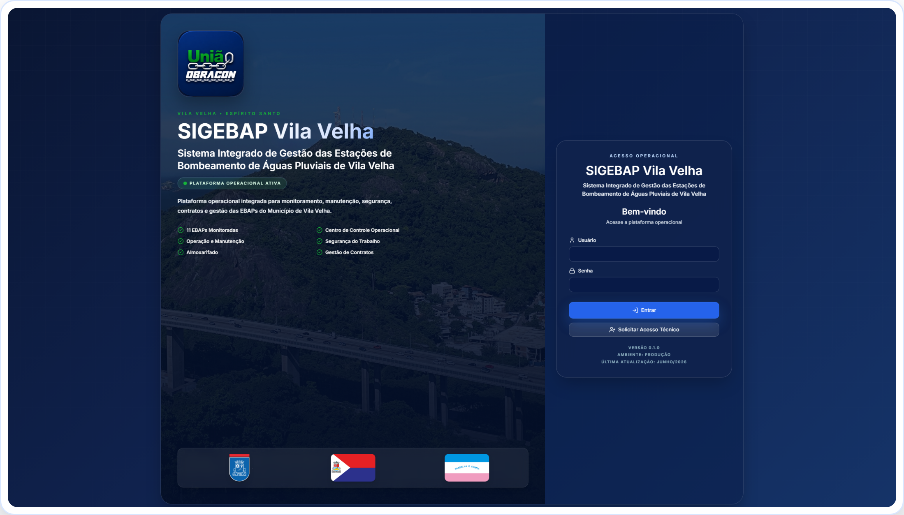
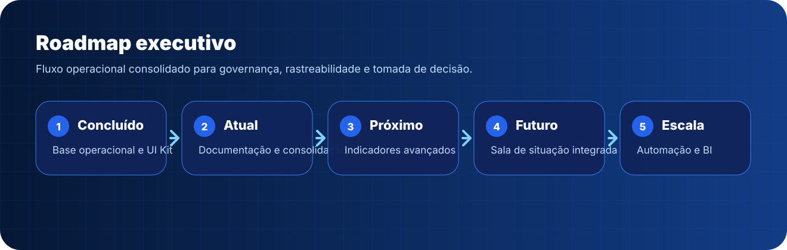
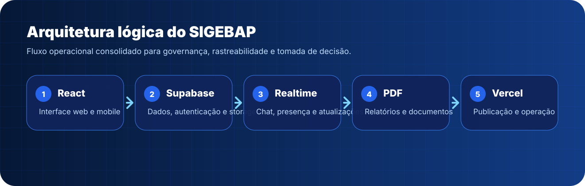
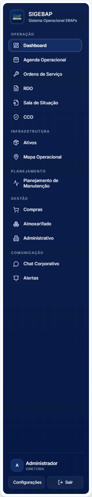
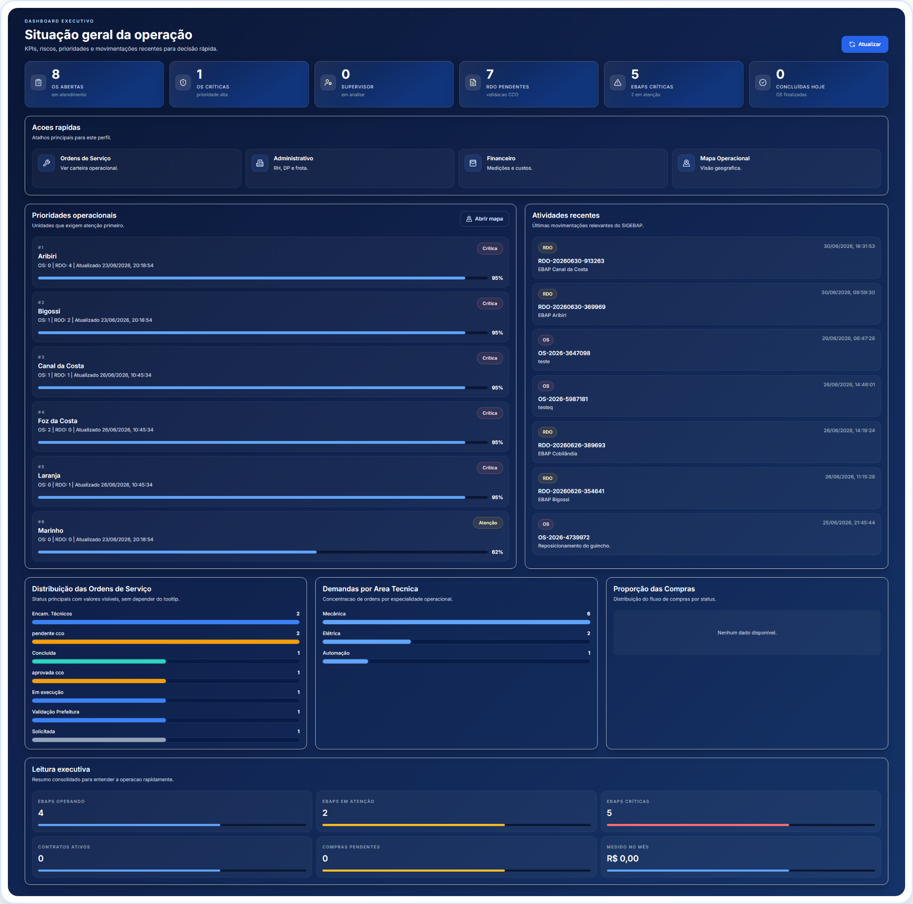
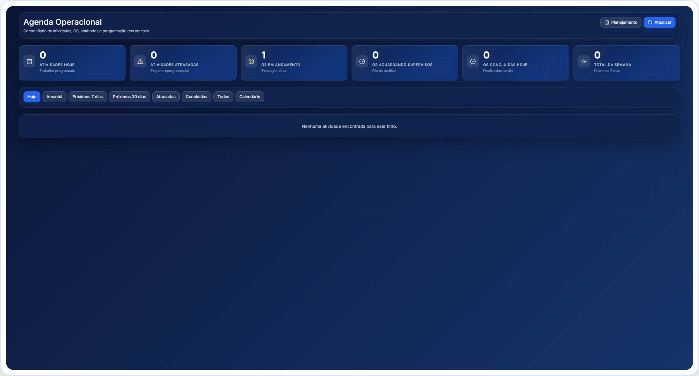
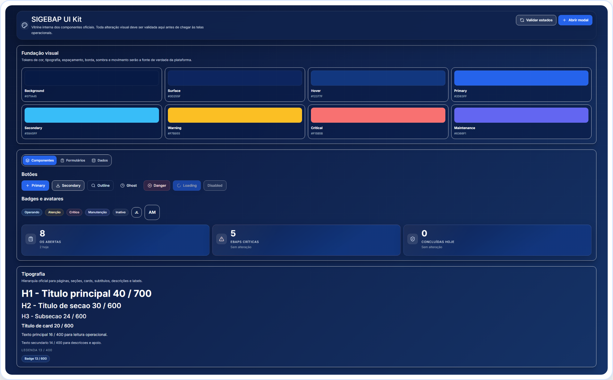

Sistema Integrado de Gestão das Estações Elevatórias de Águas Pluviais
Documento Executivo Corporativo · Versão 4.0 · 06/07/2026
Material institucional para apresentação à Gerência e Diretoria, com visão executiva, arquitetura, módulos, fluxos operacionais e mockups profissionais das telas.
Sumário executivo
Conteúdo do documento
Organização editorial para leitura executiva, técnica e operacional.
01Introdução03
02História do Projeto04
03Arquitetura do Sistema05
04Perfis e Governança06
05Dashboard Executivo07
06Agenda Operacional08
07Ordens de Serviço09
08RDO10
09Ativos e Sala de Situação11
10Mapa Operacional12
11Gestão e Suprimentos13
12Comunicação14
13Experiência Mobile15
14Roadmap16
15Galeria de Mockups17
16Conclusão24
Introdução
Uma plataforma operacional para gestão das EBAPs
O SIGEBAP consolida operação, manutenção, comunicação, documentação e governança das Estações Elevatórias de Águas Pluviais em uma única plataforma corporativa.
11EBAPs estruturadas
120+ativos operacionais
360°rastreabilidade
1fonte da verdade
Operação
RDO, CCO, Sala de Situação, comunicação e acompanhamento em campo.
Manutenção
OS, ativos, planejamento, agenda e histórico técnico integrado.
Gestão
Compras, almoxarifado, administrativo, indicadores e documentação executiva.

Figura 1.1 – Tela de acesso institucional do SIGEBAP.
História do Projeto
Da necessidade operacional ao produto corporativo
O SIGEBAP nasce da operação real das EBAPs, evoluindo de controles dispersos para uma plataforma integrada, auditável e orientada a decisão.
DiagnósticoIdentificação de lacunas em rastreabilidade, comunicação, RDO, OS e ativos.
EstruturaçãoCriação da arquitetura integrada com Supabase, módulos operacionais e perfis.
ModernizaçãoDesign System, mobile nativo, dashboards executivos e documentação corporativa.
EscalaBase preparada para indicadores, sala de situação, automações e BI.

Linha do tempo executiva do SIGEBAP.
Arquitetura
Arquitetura operacional integrada
A plataforma utiliza React, Supabase, Storage, Realtime e geração documental para conectar módulos sem duplicidade de informação.

Arquitetura lógica do SIGEBAP.
Frontend React
Interface web e mobile com rotas protegidas e componentes oficiais do UI Kit.
Supabase
Banco, autenticação de aplicação, políticas RLS, arquivos e realtime.
Governança
Perfis, permissões, histórico, auditoria e documentos PDF.
Perfis
Governança por perfil de acesso
Cada usuário visualiza somente o que faz sentido para sua função, reduzindo complexidade e aumentando segurança operacional.
Operador
RDO, abertura de OS, comunicação e acompanhamento da EBAP.
Técnico
Execução de OS, anexos, evidências, materiais e conclusão técnica.
Supervisor
Fila de OS, validação, planejamento, equipe e agenda por área.
CCO
Validação de RDO e OS operacionais, comunicação e visão de situação.
Gerência e Diretoria
Dashboards, indicadores, riscos, histórico e visão consolidada.
Prefeitura e Fiscal
Abertura ou acompanhamento simplificado conforme perfil autorizado.

Figura 1.2 – Navegação principal do SIGEBAP.
Capítulo 05
Módulo 01
Dashboard Executivo
Permitir leitura executiva da operação em menos de 10 segundos.
Permissões
Diretoria, Gerência, Supervisão e perfis autorizados.
Funcionalidades
KPIs geraisPrioridades operacionaisAtividades recentesAtalhos por perfil
Fluxo operacional
1Acesso ao sistema
2Consolidação de indicadores
3Ranqueamento de riscos
4Decisão gerencial
Benefícios
Visão rápidaMenos dependência de planilhasFoco em risco e decisão

Figura 1.3 – Dashboard Executivo no SIGEBAP.
Capítulo 06
Módulo 02
Agenda Operacional
Transformar planejamento e programação em rotina operacional acompanhável.
Permissões
Supervisor por área; Gerência, Diretoria e Administração com visão global; CCO em leitura quando aplicável.
Funcionalidades
Importação XLSLeitura de abasPlanejamento por supervisorCriação manual por diaArrastar e editar atividadesEventos e lembretes
Fluxo operacional
1Planejamento importado ou criado
2Supervisor revisa
3Atividade recebe área, equipe e EBAP
4Evento pode gerar OS
5Execução é acompanhada
Benefícios
Agenda real de operaçãoRedução de planilhas paralelasVisão por Mecânica, Elétrica e Automação

Figura 2.1 – Agenda Operacional no SIGEBAP.
Capítulo 07
Módulo 03
Ordens de Serviço
Ser a central única para abertura, execução, validação e rastreabilidade das OS.
Em desenvolvimentoAgenda operacional avançada, calendário e simplificação de execução técnica.
Próximas versõesIndicadores analíticos, BI, automações e relatórios executivos recorrentes.
Visão futuraSala de Situação integrada, previsibilidade operacional e inteligência de manutenção.
Roadmap corporativo do SIGEBAP.
Apêndice
Inventário visual capturado
Lista das capturas novas utilizadas como base visual do documento.
login-desktop Login institucional do SIGEBAP.
navegacao-sistema Navegação principal do SIGEBAP.
dashboard-executivo Dashboard Executivo do SIGEBAP.
dashboard-supervisor Dashboard Supervisor e fila operacional.
agenda-operacional Agenda Operacional para planejamento diário.
ordens-servico Central de Ordens de Serviço.
nova-os Abertura de nova Ordem de Serviço.
detalhes-os Detalhes da OS com histórico e rastreabilidade.
rdo-desktop RDO em ambiente desktop.
mobile-rdo RDO em experiência mobile.
cco-rdo Validação de RDO pelo CCO.
cco-os Validação de OS pelo CCO.
sala-situacao Sala de Situação das EBAPs.
ativos Central operacional de Ativos.
mapa-operacional Mapa Operacional das EBAPs.
planejamento Planejamento de Manutenção.
agenda-calendario Calendário de atividades programadas.
importacao-xls Importação XLS para cronograma de manutenção.
compras Módulo de Compras.
almoxarifado Módulo de Almoxarifado.
administrativo Administrativo, RH, DP e frota.
chat Chat Corporativo.
alertas Central de Alertas.
configuracoes Configurações administrativas.
ui-kit SIGEBAP UI Kit.
mobile-operador Tela mobile do perfil Operador.
mobile-supervisor Tela mobile do perfil Supervisor.
mobile-tecnico Tela mobile do perfil Técnico.
mobile-cco Tela mobile do perfil CCO.
mobile-prefeitura Tela mobile do perfil Prefeitura.
mobile-fiscal-operacional Tela mobile do Fiscal Operacional.
Conclusão
Um produto corporativo para operação, gestão e decisão
O SIGEBAP consolida a operação das EBAPs em uma plataforma única, com rastreabilidade, visão executiva, comunicação interna e base técnica preparada para evolução contínua.
GovernançaPerfis, permissões e histórico
OperaçãoRDO, OS, CCO e ativos
GestãoKPIs, prioridades e indicadores
EscalaBase pronta para automação

Figura 7.1 – UI Kit do SIGEBAP como base de consistência visual.